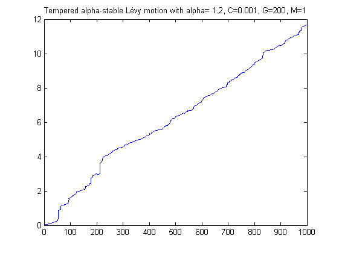
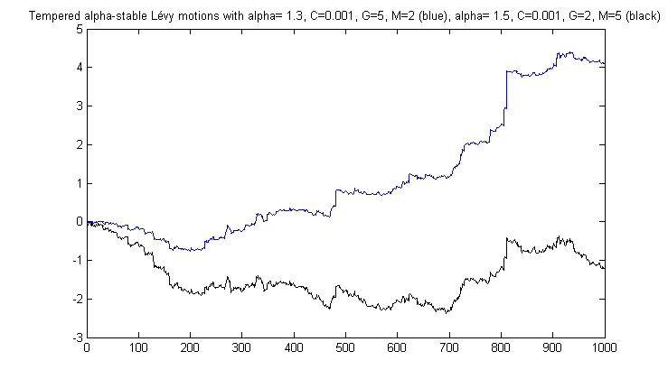

| FRACLAB Functions |
|
Generates a tempered Alpha-Stable Levy Motion
cgmy = CGMY_Principal(alpha,C,G,M,N,seed);
cgmy = CGMY_Principal(alpha,C,G,M,N,NaN) Generates the tempered alpha-stable Lévy motion, cgmy, using a sample size, N, a stability parameter, alpha, a scale parameter, C, a tempering parameter for the negative jumps, G, a tempering parameter for the positive jumps, M, and a random seed, seed. N is a positive integer, alpha is a real in (0,2), C,G and M are positive reals.
cgmy = CGMY_Principal(alpha,C,G,M,N,seed) Generates the tempered alpha-stable Lévy motion, cgmy, with a specific random seed, seed. This is useful to generate the same path several times or to compare the paths of different CGMYs.
General tempered stable processes were studied in [1]. We only simulate here so-called CGMY processes as introduced in [2]. The synthesis is performed in the Fourier domain. Tempering means that one removes large jumps. This is done independantly for positive and negative jumps. A large G (resp. M) translates into stronger tempering for negative (resp. positive) jumps.
N = 1000; A = 1.2; C =
0.001; G=200;M=1 ;
cgmy1=CGMY_Principal(A,C,G,M,N,NaN);
figure;
plot(cgmy1);
title('Tempered alpha-stable Lévy motion with
alpha= 1.2, C=0.001, G=200, M=1') ;

N = 1000; A1 = 1.3; A2=1.5 ;C = 0.001;
G1=5 ; G2=2 ;
M1=2 ; M2=5;seed=123 ;
cgmy2=CGMY_Principal(A1,C,G1,M1,N,seed);
cgmy3=CGMY_Principal(A2,C,G2,M2,N,seed);
figure;
plot(cgmy2);hold on ; plot(cgmy3,'k')
title('Tempered
alpha-stable Lévy motions with alpha= 1.3, C=0.001, G=5, M=2
(blue), alpha= 1.5, C=0.001, G=2, M=5 (black)');

asmlinfrac, asmornhulen, msmlevy, amslevy, mst_processes
[1] J. Rosinski, Tempering stable processes, Stochastic Process.
Appl. 117 (2007) 677-707.
[2] Carr, P., Geman, H., Madan, D.,
and Yor, M. (2002). The fine structure of asset returns: an
empirical investigation. Journal of Business 75, 305–332.
| |
asmlevy | asmlinfrac | |